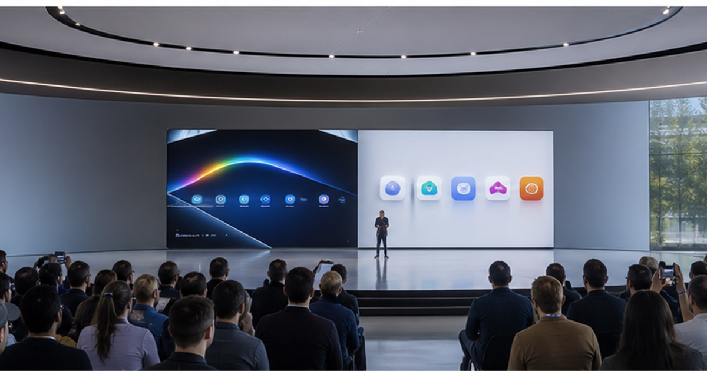
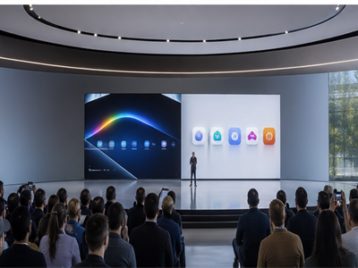

Developer conference
Apple WWDC
WWDC is Apple's annual developer conference for software platforms, APIs, design systems and ecosystem roadmaps.

More Developer ConferencesGo back to the topicSee related technology events and nearby topics.
Apple WWDC is useful because it turns vendor roadmaps into dates, demos and concrete things builders can watch.
The year slide carries dates and planning details. The parts slide keeps keynote, sessions and showcase separate.
| Year | Host / place | Country |
|---|---|---|
| 2026 | Cupertino / online | |
| 2025 | Cupertino / online | |
| 2024 | Cupertino / online | |
| 2023 | Cupertino / online | |
| 2022 | Cupertino / online | |
| 2021 | Cupertino / online |
Keep records as verified launch history, not generic hype.
- 8-12 Jun 2026 is the selected edition.
- Host context:
 United States.
United States. - Primary user value: Apple platforms and developer tools.
Edition guide
Apple WWDC 2026
Switch between recent editions without leaving the one-slider.
Use the official event site before booking travel or planning streams.
Current edition date from Apple Newsroom.
Apple Developer app, online sessions and Apple Park special event
Streaming, registration and venue access can change by edition.
Use the parts slide for the main event structure.
The general guide stays evergreen while this slide changes by edition.
Apple Newsroom.